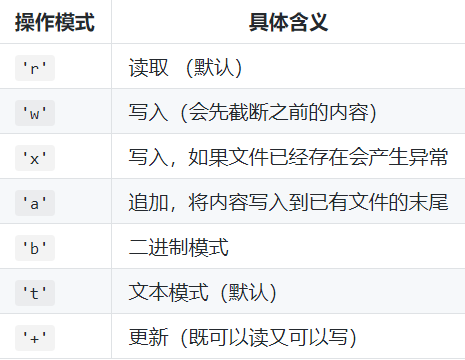
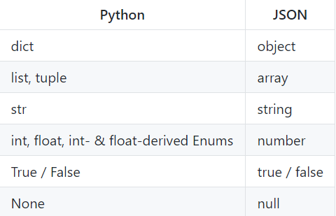

文件和异常
在实际开发中，常常需要对程序中的数据进行持久化操作，而实现数据持久化最直接简单的方式就是将数据保存到文件中。
在Python中实现文件的读写操作其实非常简单，通过Python内置的open函数，我们可以指定文件名、操作模式、编码信息等来获得操作文件的对象，接下来就可以对文件进行读写操作了。这里所说的操作模式是指要打开什么样的文件（字符文件还是二进制文件）以及做什么样的操作（读、写还是追加）

读写文本文件
读取文本文件时，需要在使用open函数时指定好带路径的文件名（可以使用相对路径或绝对路径）并将文件模式设置为’r’（如果不指定，默认值也是’r’），然后通过encoding参数指定编码（如果不指定，默认值是None，那么在读取文件时使用的是操作系统默认的编码），如果不能保证保存文件时使用的编码方式与encoding参数指定的编码方式是一致的，那么就可能因无法解码字符而导致读取失败。
1 | def main(): |
请注意上面的代码，如果open函数指定的文件并不存在或者无法打开，那么将引发异常状况导致程序崩溃。为了让代码有一定的健壮性和容错性，我们可以使用Python的异常机制对可能在运行时发生状况的代码进行适当的处理
1 | def main(): |
在Python中，我们可以将那些在运行时可能会出现状况的代码放在try代码块中，在try代码块的后面可以跟上一个或多个except来捕获可能出现的异常状况。例如在上面读取文件的过程中，文件找不到会引发FileNotFoundError，指定了未知的编码会引发LookupError，而如果读取文件时无法按指定方式解码会引发UnicodeDecodeError，我们在try后面跟上了三个except分别处理这三种不同的异常状况。最后我们使用finally代码块来关闭打开的文件，释放掉程序中获取的外部资源，由于finally块的代码不论程序正常还是异常都会执行到（甚至是调用了sys模块的exit函数退出Python环境，finally块都会被执行，因为exit函数实质上是引发了SystemExit异常），因此我们通常把finally块称为“总是执行代码块”，它最适合用来做释放外部资源的操作。如果不愿意在finally代码块中关闭文件对象释放资源，也可以使用上下文语法，通过with关键字指定文件对象的上下文环境并在离开上下文环境时自动释放文件资源
1 | def main(): |
除了使用文件对象的read方法读取文件之外，还可以使用for-in循环逐行读取或者用readlines方法将文件按行读取到一个列表容器中
1 | import time |
要将文本信息写入文件文件也非常简单，在使用open函数时指定好文件名并将文件模式设置为’w’即可。注意如果需要对文件内容进行追加式写入，应该将模式设置为’a’。如果要写入的文件不存在会自动创建文件而不是引发异常。下面的例子演示了如何将1-9999直接的素数分别写入三个文件中（1-99之间的素数保存在a.txt中，100-999之间的素数保存在b.txt中，1000-9999之间的素数保存在c.txt中）
1 | from math import sqrt |
读写二进制文件
知道了如何读写文本文件要读写二进制文件也就很简单了，下面的代码实现了复制图片文件的功能。
1 | def main(): |
读写JSON文件
通过上面的讲解，我们已经知道如何将文本数据和二进制数据保存到文件中，那么这里还有一个问题，如果希望把一个列表或者一个字典中的数据保存到文件中又该怎么做呢？答案是将数据以JSON格式进行保存。JSON是“JavaScript Object Notation”的缩写，它本来是JavaScript语言中创建对象的一种字面量语法，现在已经被广泛的应用于跨平台跨语言的数据交换，原因很简单，因为JSON也是纯文本，任何系统任何编程语言处理纯文本都是没有问题的。
事实上JSON的数据类型和Python的数据类型是很容易找到对应关系的

使用Python中的json模块就可以将字典或列表以JSON格式保存到文件中
1 | import json |
json模块主要有四个比较重要的函数，分别是：
- dump - 将Python对象按照JSON格式序列化到文件中
- dumps - 将Python对象处理成JSON格式的字符串
- load - 将文件中的JSON数据反序列化成对象
- loads - 将字符串的内容反序列化成Python对象
这里出现了两个概念，一个叫序列化，一个叫反序列化。自由的百科全书维基百科上对这两个概念是这样解释的：“序列化（serialization）在计算机科学的数据处理中，是指将数据结构或对象状态转换为可以存储或传输的形式，这样在需要的时候能够恢复到原先的状态，而且通过序列化的数据重新获取字节时，可以利用这些字节来产生原始对象的副本（拷贝）。与这个过程相反的动作，即从一系列字节中提取数据结构的操作，就是反序列化（deserialization）”。
使用requests模块（封装得足够好的第三方网络访问模块）访问网络API获取国内新闻，如何通过json模块解析JSON数据并显示新闻标题
1 | import requests |